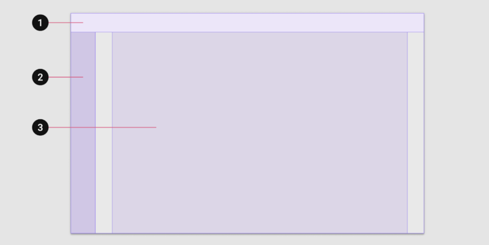
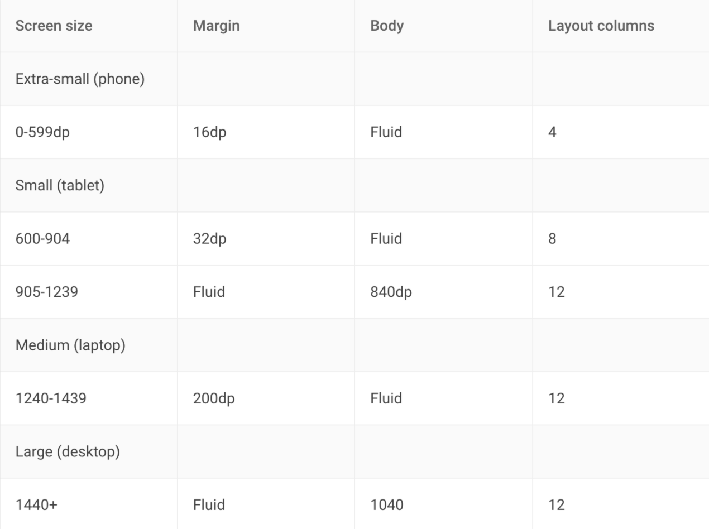
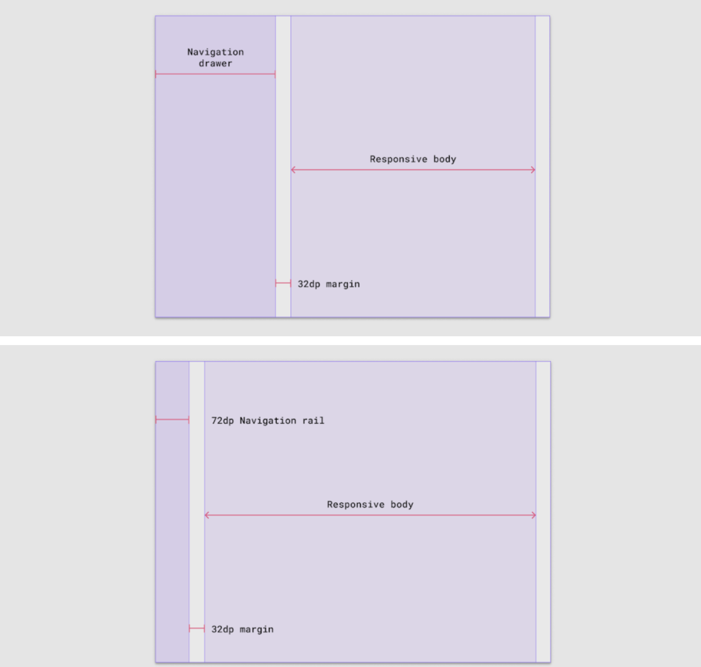
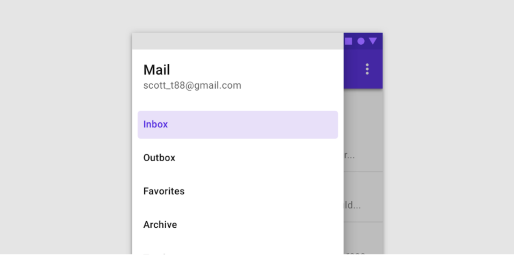
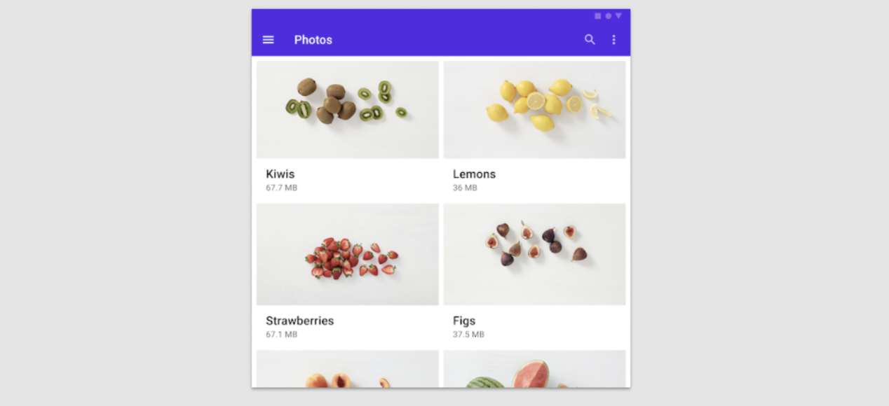

// Only interrace can be merged. interface PostionInterface { z: number; }
type 은 computed properties 를 사용 가능하다.
1 2 3 4 5
type Person = { name: string; age: number; } type Name = Person['name'] // string
개념적인 차이
Interface 란 계약서이다. 규격 사항으로 정의하고 어떤 규격 사항대로 정의하도록 사용하고 싶다면 interface 를 사용한다.
type 은 데이터의 모습을 정의한다. 단순의 데이터의 모습을 정의한다면 type 을 사용하는것이 좋다.
Utility types
type 을 변형 시키는 것이 typescript 에서는 가능하다.
IndexType
1 2 3 4 5 6
const obj = { name: 'koo', }
obj.name // koo obj[name] // koo
Animal type :
1 2 3 4 5 6 7 8 9
type Animal = { name: string; age: number; gender: 'male' | 'female' } type Name = Animal['name'] // string type Gender = Animal['gender'] // 'male' | 'female'
type Keys = keyof Animal //'name' | 'age' | 'gender'
Pertson type :
1 2 3 4 5 6 7 8
type Person = { name: string; gender: Animal['gender'] } const person: Person = { name: 'koo', gender: 'male' }
MappedType
1 2 3 4 5 6 7 8
type Video = { title string; author: string; } type VideoOptional = { title?: string; author?: string; }
맵 타입으로 이런 작업을 할 수 있다.
1 2 3 4 5 6 7 8
// type 정의 안에서 in 사용 가능 type Optional<T> = { [P in keyof T]?: T[P] } type VideoOptional = Optional<Video>; const videoOp: VideoOptional = { title: 'hi' }
readonly:
1 2 3
type ReadOnly<T> = { readonly [P in keyof T]: T[P]; }
Proxy :
1 2 3 4 5 6 7
type Proxy<T> = { get(): T; set(value: T): void; } type Proxify<T> = { [P in keyof T]: Proxy<T[P>; }
Conditional type
type 에도 조건을 줄 수 있다.
1 2 3 4 5 6 7 8 9 10 11 12 13 14
type Check<T> = T extends string? boolean : number; type Type = Check<string> // boolean
type TypeName<T> = T extends string ? 'string' : T extends number ? 'number' : T extends boolean ? 'boolean' : T extends undefined ? 'undefined' : T extends Function ? 'function' : 'object'
ReadOnly
1 2 3 4 5 6 7 8
type ToDo = { title: string; description: string; } // 위에서 작성했지만 사실 왠만한 utility type 은 정의되어 있다. function display(todo Readonly<ToDo>) { ... }
PartialType
1 2 3 4 5 6 7 8 9
type Todo = { title: string; description: string; label: string; priority: 'high' | 'low' } function updateTodo(todo: Todo, fieldsToUpdate: Partial<ToDo>) : ToDo { return {...todo, ...fieldsToUpdate }; }
TypeScript primitives type은 모두 소문자 이다. 따라서 TypeScirpt 에서 type을 명시할때 래퍼 객체를 사용하면 안된다.
boolean
래퍼 객체로 타입을 정하 지 않는다.
1 2 3 4 5
let isDone: boolean = false;
isDone = true;
console.log(typeof isDone); // boolean
number
10진수 , 16진수, 8진수, 2진수, 모두 가능.
NaN 가능.
1_000_000과 같은 표현 가능.
1 2 3 4 5 6 7 8 9 10 11
let decimal: number = 6;
let hex: number = 0xf00d;
let binary: number = 0b1010;
let octal: number = 0o744;
let NotANumber: number = NaN;
let underscoreNum: number = 1_000_000;
string
1 2 3 4 5 6 7 8
const fullName: string = "JayoonKoo"; const age: number = 30;
const sentence: string = `Hello, My name is ${fullName}. I'll be ${age + 1} years old next month.`;
console.log(sentence);
symbol
new Symbol로 사용할 수 없다. Symbol 함수를 사용해서 만들어야 한다.
기본 설정으로 tsc를 만들었다면 오류가 날 수 있다. tsconfig.json으로 이동한 후에 lib를 열어서 ES2015, DOM을 추가해 준다.
Symbol 은 프리미티브 타입의 값을 담아서 사용한다. 고유하고 수정 불가능한 값을 만들어 주는데 주로 접근을 제어하는 용도로 사용하는 경우가 많다.
1 2 3 4 5 6 7 8 9
console.log(Symbol("foo") === Symbol("foo"));
const sym = Symbol();
const obj = { [sym]: "value", };
console.log(obj[sym]);
undefined, null
undefined 로 선언한 변수는 undefined, void만, null 로 선언한 변수는 null 만 받을 수 있다. 따라서 변수 자체로는 할 수 있는게 별로 없다.
null 과 undefined 는 다른 모든 타입의 서브 타입이다. --strictNullCheck 설정을 사용하지 않으면 number 에 null 또는 undefined가 할당될 수 있어서 문제가 있다. 따라서 해당 옵션을 항상 켜 놓는것이 좋다. "strict": true 로 해 두면 그 안에 있는 strictNullCheck 도 켜지게 된다.
하지만 number 같은 경우 undefined 나 null 이 될때가 있을 텐데 불편할 수 있다. 그럴때에는 union type을 사용한다. 나중에 타입 가드를 사용하여 제외하는 식으로 사용 된다.
1 2 3 4 5 6 7 8
let union: string | null = null;
let u: null = null;
union = "Mark";
console.log(u); console.log(typeof u);
JS 에서 null
무언가 사용할 준비가 덜 된 상태 null 이라는 타입은 null 이라는 값만 가질 수 있다.
런타임에서는 typeof null은 object이다.
JS 에서 undefined
값을 할당하지 않는 변수를 undefined라고 함. 무언가 아예 준비가 안된 상태. 프로퍼티가 없을 때에도 undefined 이다.
런타임에서 typeof undefined 하면 undefined이다.
object
non-primitive type 으로서 primitive type이 아닌 것을 사용할때 명시한다.
non-primitive type
not (number, string, boolean, bigint, symbol, null, or undefined.)
Array
원래 JS에서는 object이다. 같은 타입에 데이터만 가능하다.
사용 방법 :
Array<타입>
타입[]
1 2 3 4 5 6 7 8 9
// 보통은 이 방법을 사용함. let list: number[] = [1, 2, 3];
let listUnion: (number | string)[] = [1, 2, 3, "4"];
// 만약 데이터의 순서나 상황을 알고 있다면 튜플을 사용할 것
// jsx 에서 충돌 할수도 있음. let list2: Array<number> = [1, 2, 3];
tuple
순서도 맞아야 하고, 타입도 맞아야 하고, 길이도 맞아야 한다.
1 2 3 4 5 6 7 8 9 10
let x: [string, number];
// 순서도 맞아야 되고 타입도 맞아야 되고 길이도 맞아야 한다. x = ["hello", 39];
const person: [string, number] = ["mark", 49];
// 첫번째는 string, 두번째는 number임이 확실해 진다. // 세번째를 추가하면 오류가 나게 된다. const [first, second] = person;
any
귀찮다고 아무렇게나 사용하면 type system을 무너뜨릴 수 있다.
어떤 타입이어도 상관 없는 타입이다.
이걸 최대한 사용하지 않는것이 핵심이다. (타입 체크가 안되기 때문에 )
컴파일 옵션 중에는 any를 써야하는데 쓰지 않으면 오류를 뱉도록 하는 옵션도 있다. (noImplicitAny)
논리적인 그룹핑과 어떤 방법으로 컴파일 할것인지에 대한 맥락. 보통 tsconfig.json 파일로 관리한다.
tsconfig schema
최상위 프로퍼티 중 주요한 항목
compileOnSave
extends
compileOptions
files
include
exclude
references
compileOnSave
true/false(default fasle): true 로 설정하면 저장하면 컴파일 해줌.
누가?
Visual Studio 2015 with TypeScript 1.8.4 이상
tom-thypescript 플러그인
extends
상속 받을 때 사용함.
파일 (상대) 경로명 : string
1 2 3 4 5
{ "compilerOptins": { "strict": true } }
1 2 3
{ "extends": "./base.json" }
tsconfig/base 저장소로 이동하면 다양한 base 설정을 받을 수 있다.
npm install --save-dev @tsconfig/deno
1 2 3
{ "extends": "@tsconfig/deno/tsconfig.json" }
files, include, exclude
어떤 파일을 컴파일 할것인지 결정함.
files 가 가장 강한 설정이다. 따라서 exlucde를 통해서 제외 했더라도 files 안에 있으면 컴파일 된다.
셋다 설정이 없으면 전부 컴파일 하려고 한다.
files
상대 혹은 절대 경로의 리스트 배열이다.
exclude 보다 쎄다.
include, exclude
glob 패턴 (마치 .gitignore)
include
exclude 보다 약하다.
exclude
설정 안하면 4가지 (node_modules, bower_components, jspm_packages, <outDir>) 를 dafault로 제외 함.
<outDir> 은 항상 제외한다. (include에 있어도)
compileOptions - typeRoots, types
만약 외부 라이브러리를 사용할 경우 타입 검사를 어떻게 수행할까?
예를 들어 react를 설치하면 js로 만든 것이기 때문에 오류가 발생한다. 따라서 npm i --save-dev @types/react를 하게 되면 node_modules/@types안에서 파일을 찾아서 오류가 나지 않게 된다. 이것이 default 설정인데 typeRoots와 types 를 통해 설정을 변경할 수 있다.
typeRoots로 @types로 사용할 폴더를 설정한다. 유명하지 않는 라이브러리 같은 경우 @types가 없을 수 있고 내가 작성한 패키지는 내가 따로 만들어야 하는 경우도 있다.
@types
내장 type definition 시스템이다.
아무 설정을 하지 않으면 node_modules/@types 라는 모든 경로를 찾아서 사용한다.
typeRoots를 사용하면? -> 배열 안에 들어있는 경로들 아래서만 가져온다.
types 를 사용하면 -> 배열안에 모듈 혹은 ./node_module/@types/ 안에 모듈 이름에서 찾아온다. [] 빈 배열을 넣는다는 건 이 시스템을 이용하지 않겠다는 것이다.
typeRoots와 types를 같이 사용하지는 않는다.
compileOptions - target과 lib
target - 자바스크립트 버전을 설정한다. 기본값은 es3이다. 컴파일 할때 해당 버전으로 변경한다.
lib - lib로 사용할것들을 배열로 넘겨줌. target에 따라 default로 저장되는 lib가 있다.
compileOptions -outDir, outFil, rootDir
rootDir : 컴파일 대상이 되는 파일이 있는 폴더
따로 설정하지 않으면 ts 파일이 있는 가장 최상위 폴더를 rootDir로 설정한다.
outDir : 컴파일 한 파일이 저장될 폴더
outFile: 지정된 경우 모든 전역 파일이 지정된 단일 출력 파일로 연결된다.
compileOptions - strict
무조건 strict를 true로 설정하는 것이 기본이다.
--noImplicitAny any로 추정되는데 any로 명시하지 않았다면 에러가 발생함. suppressImplicitAnyIndexErrors 인덱스 객체도 any로 추론될 경우 에러를 발생시키는 옵션인데 이것은 너무 까다로우니 따로 에러가 되지 않게 하는 설정도 있음.
--noImplictThis this 가 any 타입으로 추정될 경우 . this에 타입을 명시해야 한다고 에러를 발생 시킴, 함수 매개변수에 첫번째에 this를 넣고 타입일 지정해줌. js에서는 오류 이지만 ts에서는 가능함. 마치 call /applyu/ bind 와 같이 this를 대체하여 함수 콜을 사용하는 용도. class에서는 오류가 나지 않음 왜냐하면 class 자체로 타입 체크가 가능하기 때문에
--strictNullChecks 이것을 적용히지 않으면 모든 타입은 null 과 undefined가 될 수 있다. 꼭 설정해주어야 함. 한가지 예외는 undefined 에 void 할당이 가능하다.
--strictFunctionTypes 반환 타입은 공변적, 인자 타입은 반 공병적. 그런데 타입스크립트에서 인자 타입은 공변적이면서, 반공변적인게 문제. 함수의 파라미터 타입이 반공변적으로 동작핟조록 변경한다. 반공변 이란 공변에 반대라고 생각하면 된다.
1 2 3 4 5 6 7 8 9
type Logger<T> = (param: T) =>void; let log: Logger<string | number> = (param) => { console.log(param); }; let logNumber: Logger<number> = (param) => { console.log(param); }; log = logNumber; // Error logNumber = log; // OK
공변이라고 생각하면 logNumber 가 서브 타입이기대문에 log에 할당하는 것이 가능할 것이다. 하지만 --strictFunctionTypes를 적용하면 파라미터에 대해서 반공변적으로 작동하기 때문에 반대로 작동한다. 사실 logNumber는 숫자 밖에 처리하지 못하기 때문에 string 도 처리할 수 있는 log에 할당하는게 맞지 않다.
--stcitPropertyInitialization 정의되지 않은 클래스의 속성이 생성자에서 초기화되었는지 확인한다. 만약 비동기로 생성되는 클래스일 경우에 생성자에 async를 사용하는것이 불가능하기 때문에 에러가 발생한다. 이럴때에는 async 함수로 initialize 같은 함수를 만들어 할당해 주고 클래스 내부 변수로 이름 뒤에 !를 붙여주면 된다. private _name!: string;
--strictBindCallApply bind, call, apply 에 대한 검사를 엄격히 수행한다.
const p1 = new Person("koo", 39); console.log(p1);
Getter & Setters
1 2 3 4 5 6 7 8 9 10 11 12 13 14 15 16
class Person { public constructor(private _name: string, public age: number) {}
get name() { return this._name + "Jayoun"; }
set name(n: string) { this._name = n; } }
const p1 = new Person("koo", 39); console.log(p1.name); // get 을하는 함수를 getter p1.name = "Woongjae"; // set 을하는 함수를 setter console.log(p1.name); // get 을하는 함수를 getter
getter 만 만들고 setter는 만들지 않는 방식으로 읽기만 가능한 프로퍼티를 만들 수 있다.
readonly properties
1 2 3 4 5 6 7 8 9 10 11 12 13 14 15 16 17
class Person { public readonly name: string = "Mark"; private readonly country: string = "Korea";
public constructor(private _name: string, public age: number) { this.country = "korea"; }
hello() { // this.country = 'China'; } }
const p1 = new Person("koo", 39); console.log(p1.name); // get 을하는 함수를 getter // p1.name = "Woongjae"; // readonly 이기 대문에 할당할 수 없다. console.log(p1.name); // get 을하는 함수를 getter
readonly 를 사용하여 get 만 할 수 있는 프로퍼티를 만들 수 있다. 이때 할당은 처음 프로퍼티를 생성하는 부분과 생성자에서만 할 수 있다.
// 매개체로 이용해서 객체를 꺼내옴. public static getInstance(): ClassName { // ClassName 으로 부터 만든 Object가 있으면 그걸 리턴 // 없으면, 만들어서 리턴 if (ClassName.instance === null) { ClassName.instance = new ClassName(); }
return ClassName.instance; }
// new 를 직접 호출 할 수 없게 함. // 다른 오브젝트 생성 금지 private constructor() {} }
// 만들어진 단일 오브젝트를 공유하는 개념 const a = ClassName.getInstance(); const b = ClassName.getInstance();
console.log(a === b);
생성자 함수를 private 접근 제어자를 사용해서 밖에서 호출하지 못하도록함. getInstance() 같은 함수를 사용해서 인스턴스가 있다면 반환하고 인스턴스가 없다면 새롭게 생성한후 할당, 프로퍼티로 있는 인스턴스를 넘겨준다.
이렇게 함으로서 클래스로쿠터 단 하나의 오브젝트만 생성해서 사용하는 패턴을 만들 수 있다.
// const p = new Parent("Mark", 39); // p.print();
// const c = new Child("son", 39); const c = new Child(5); c.print();
부모 클래스에서 protected 로 선언한 함수 또는 프로퍼티는 클래스 외에서 접근은 불가능하지만, 상속받은 자식 클래스에서 접근은 가능하다. 자식 클래스에서 기본 생성자가 아니라 따로 만들었다면, super()를 사용하여 부모 클래스이 생성자를 호출해 주어야 한다. 그렇게 해야지 부모 클래스의 값이 할당 되고 this키워드를 사용하여 호출, 사용할 수 있게 된다.
abstract
1 2 3 4 5 6 7 8 9 10 11 12 13 14 15 16
// new 불가 , 상속후 완전하게 만든다음에 사용 가능. abstract class AbstractPerson { protected _name: string = "Mark";
// 같은 로직이면 문자로 생각하고 싶지만 any가 나옴 // lnegth 같은 메서드를 사용해도 number 가 아니라 any가 나옴.. console.log(hello("Mark")); // 같은 로직이면 숫자로 생각하고 싶지만.. console.log(hello(4));
// 만약 string을 넣으면 T 가 string이 되는 것. 마치 변수처럼 사용 functionhelloGeneric<T>(message: T): T{ return message; }
// T는 string으로 추론됨. helloArray(["hello", "world"]); // T는 <string | number> 로 추론함. 유니온 타입이됨. // string과 number 에서 모두 사용할수 있는 메서드만 사용할 수 있음. helloArray(["Hello", 5]);
new PersonExtends("Mark"); new PersonExtends(27); // new PersonExtends(true);
generic 에서 extends 는 일반적인 상속과는 다른 개념으로 사용된다. generic 에서 사용하게 되면 타입을 제한하는 역활을 하게 된다. 따라서 코드에서 new PersonExtends(true)는 에러를 인수로 <string | number > 가 아닌 값을 주었기 때문에 에러를 발생시킨다.
플랫폼, 환경 및 화면 크기 전반에 걸쳐 일관성을 유지하기 위한 균일한 요소와 간격에 대해서..
Principles
예측 가능성. 일관된 UI 영역 및 공간 구성으로 직관적이고 예측 가능으한 레이웃이여야 한다.
일관성
반응성
Layout anatomy
레이아웃은 유사한 기능ㅇ을 공유하는 요서와 구성 요서로 구성된다. 레이아웃 영역은 또한 작은 컨테이너를 그룹화 한다.
큰 화면 레이아웃에는 세 가지 주요 영역이 있다.

App bars
Navigation
Body
반응형을 구현할때는 작은 화면에서 큰 화면으로 만들어 가면서 다양한 form factors 에 적용해 나가는 것이 좋다.
Body region
Body 영역은 대부분의 컨텐트를 표시하는데 사용된다. 일반적으로 목록, 카드, 버튼 및 이미지와 같은 구성 요소를 포함한다.
Body 영역은 세가지 매개변수에 대한 확장 가능한 값을 갖는다.
Vertical and horizontal dimensions
Number of Columns
Margins
Responsive column grid
화면 크기에 따른 break point

Navigation region
네비게이션 서랍이나 목록을 표시하는 영역이다. 네비게이션 영역의 넓이는 확장되었을때는 256dp 접었을때는 72dp (rail)를 유지한다. margin 이 48dp 보다 적은 화면 사이즈에서는 body navigation 영역을 보여주기 위해서 body 영역이 줄어들 수 있다. (600~904dp 사이에 영역)

만약 화면 사이즈가 600dp 보다 작다면 modal 를 사용한다.

App bar
앱바는 사용자가 기본 작업을 수행하거나 본문 영역의 요소에 대해 작업을 수행하는 데 도움이 되는 구성 요소 및 작업을 표시하고 그룹화하는 데 사용된다.
Composition
Visual grouping
유사한 콘텐츠 또는 기능을 가진 레이아웃의 요소는 그룹화하여 다른 요소와 분리한다.

글자 영역에 빈공간을 사용하여 다른 요소와 분리한다.
Containment
관련된 요소끼리 가깝게 배치하고 관련 되지 않는 요소 끼리는 넓게 배치하여 두 그룹을 분리 할 수 있고, 선을 이용하여 분리할 수도 있다.
텍스트를 포함하는 컨텐츠는 사이즈가 쉽게 변해야 하며, 읽기 쉬운 상태로 남아있어야 한다.
Scaling with text
한줄에 40-60 글자가 있는 것이 이상적이다. 텍스트를 포함된 요소는 가독성을 유지하면서 요소 크기에 맞춰 크기를 조정해야 한고 한줄에 너무 길게 확장되지 않도록 해야한다.
가독성을 높이려면 line height 를 조정하는것이 좋다.
Material measurements
시각적 균형을 이루도록 하기 위해 대부분의 간격과 레이아웃 모두에 8dp로 정렬한다. 구성 요소의 크기는 8dp 단위로 조정되어 각 화면에서 일관된 시각적 리듬을 보장한다. 또한 아이콘, 텍스트와 같은 더 작은 요소는 4dp 기준으로 정렬할 수 있다.